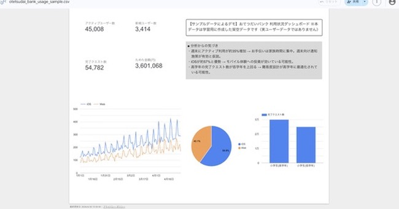
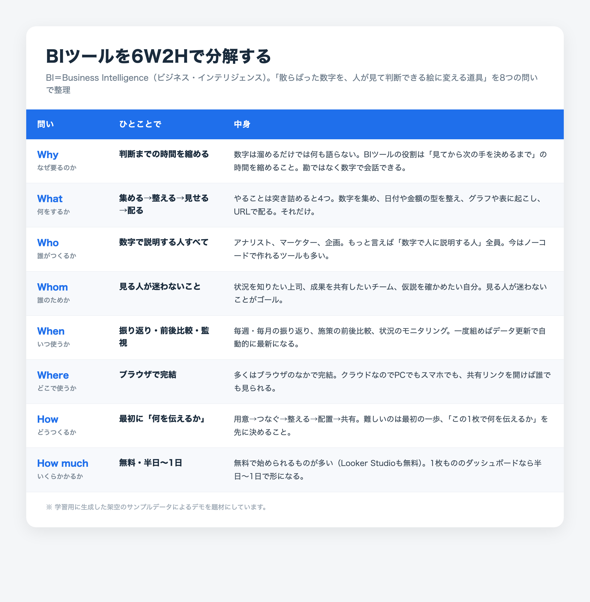

事業課題を、分析 → 推進 → 実装 → 定着まで
一気通貫で解決する。
データと仕組みで組織のデータ・ドリブンな意思決定を支え、要件定義から実装・運用までを完遂する推進役。分析・推進・コンサル・実装を一人で担える希少人材です。
実務での分析経験はこれから。だからこそ、口頭の説明ではなく 動く実物（ライブデモ・BI・SQL）で証明 します。
分析も、推進も、実装も。一人で一気通貫。
職種の枠ではなく「事業課題を解く」を軸に、上流の分析・構想から実装・定着までを自走します。
データアナリスト / BI
SQL・Python・Looker Studioで、収集 → 可視化 → 考察まで。
PM / PL / PMO / PdM
要件定義・折衝・合意形成・定着までプロジェクトを主導。
課題解決・DX推進
現場の「負」を構造化し、仕組みで解く提案・グランドデザイン。
エンジニア / 運用
Next.js・Supabaseで、企画から実装・運用まで一人で完結。
プロフィール
ひと目で分かる自己紹介です。ご関心の職種・働き方とのマッチも、ここでご確認いただけます。
- 🎯 希望職種
- データアナリスト／BI・データ分析、PM・PL・PMO・PdM、ITコンサルタント。実装（プロダクトエンジニア）・DX推進まで一人で自走（事業会社）
- 🧭 得意領域
- データの定量化・可視化／SQL・Python／要件定義・グランドデザイン／業務自動化（GAS・VBA）
- 📍 所在地
- 神奈川県海老名市
- 🏠 働き方
- 面談にてご相談（希望勤務地・リモート可否は後日確定）
- 🗓 就業可能時期
- 面談にてご相談
- 💼 希望雇用形態
- 面談にてご相談
- 📄 詳細
- 職務経歴書（RESUME.md）
なぜ転身するのか／どう証明するのか
教育現場での16年は、一貫して「現場の観察 → 事実（データ）→ 打つ手（示唆）」の連続でした。アンケートの自由記述を形態素解析で定量化し、校務の定型業務をRPAで内製化し、250名規模のIT基盤を設計・運用し、100台規模の更新プロジェクトを折衝から定着まで主導する——いずれも「勘ではなく数字と仕組みで意思決定を支え、人を巻き込んで前に進める」仕事です。
この積み上げを、より広い事業のインパクトへ向けたいというのが転身の理由です。誇張はしません。実データを扱う"業務経験"はこれからです。だからこそ、口頭のアピールではなく——動くプロダクト・BIダッシュボード・SQL・ドキュメントという「実物」で、できることを証明します。
実績ハイライト（課題 → 対応 → 成果）
「何を解決できるか」を、実測した数値でお見せします。
定型業務の自動化を内製
- 課題 外注の難しい校務システムの定型業務に時間を圧迫
- 対応 Excel VBA／GASで自動化を内製（約160時間で構築）
- 成果 定型業務 約500h → 約300h／年
BIダッシュボードを制作
- 課題 散らばった利用データを判断に使える形へ
- 対応 SQL集計 → Looker StudioでKPI・時系列を可視化
- 成果 週末に利用増などの示唆を抽出（学習用サンプル）
定性データの定量化
- 課題 アンケート自由記述が活用されず埋もれる
- 対応 Python（MeCab）で形態素解析 → TF-IDF＋分類
- 成果 肯定/否定を自動分類し判定根拠まで提示
マネジメント・プロジェクト推進の実績
PM／PL／PMO／PdM 視点の実務。要件定義・グランドデザインから、折衝・合意形成・定着までを主導してきました。
端末100台規模の更新PJ
- 役割 要件定義〜ベンダー選定〜定着支援まで主導
- 難所 教育委員会との折衝・校長決裁による合意形成
- 成果 複数ステークホルダーを束ね導入・定着まで完遂
250名規模のIT基盤設計・運用
- 役割 ネットワーク・アカウント・権限の全体設計
- 対応 Active Directoryで一元管理、ポリシー策定
- 成果 企画〜運用まで一気通貫でITガバナンス向上
内製化の判断と仕組み化
- 判断 外注6人月規模を「1人月で内製」と意思決定
- 対応 手順書・運用ルールを整備し属人化を排除
- 成果 後任が理解できるドキュメント文化を定着
BI・データ分析の「実物」エビデンス
おてつだいバンクの利用状況を可視化したBIダッシュボード（学習用サンプルデータによる分析デモ）。収集 → SQL集計 → 可視化 → 考察を、実物でお見せします。


ダッシュボードの「中身」を作る集計クエリの一部。平日 vs 週末の季節性をチェックする実際のクエリです。
-- Q4. 平日 vs 週末（季節性チェック）
-- strftime('%w', 日付) は 0=日,1=月,…,6=土。0か6なら週末
SELECT
CASE WHEN CAST(strftime('%w', usage_date) AS INTEGER) IN (0,6)
THEN '週末' ELSE '平日' END AS 区分,
COUNT(DISTINCT usage_date) AS 日数,
ROUND(AVG(completed_quests), 1) AS 完了クエスト平均,
ROUND(AVG(active_users), 1) AS アクティブ平均
FROM usage_daily
GROUP BY 区分
ORDER BY 区分 DESC;代表プロダクト — おてつだいバンク
子供向けの「お手伝い×マネー教育」アプリ。要件定義からデプロイまで一人で完結。分析を支える実装力の証明です。
プロダクト概要
お手伝いをRPGのクエストに見立て、稼いだお金を「つかう／ためる／ふやす」に分けて学ぶ体験。株式ポートフォリオ・シミュレーターやAIアドバイザー（Claude API）を搭載。
技術・設計のポイント
Next.js 16 / React 19 / TypeScript / Supabase（PostgreSQL）。
- Supabase 15テーブルに Row Level Security を全面適用、PINは bcrypt でハッシュ化
- COPPA／GDPR を意識した子供向けプライバシー設計
- 約96コミットで v0.1 → v0.22 まで反復開発（要件定義・ER図・UX監査を文書化）
スキルセット
濃い順に：データ分析コアからプロダクト実装まで。
データ分析 / BI（コア）
業務自動化 / DX
プロダクト実装（分析を支える土台）
インフラ / 運用
プロジェクト一覧
分析・AI から学習教育アプリまで。リンクは実際に動く成果物です。
経歴サマリ
公立学校にて16年、情報科教員と並行し「校内SE」としてインフラ・RPA・Web開発を担当。
- 2025.04〜現在 公立高等学校 定時制（神奈川県内・専任）教員／校内SE（情報システム・社内SE相当業務を兼務）
- 2019.04〜2025.03 県立特別支援学校（埼玉県内・専任）教員／情報システム担当（PM・DX推進兼務）
- 2016.04〜2019.03 県立特別支援学校 分校（埼玉県内・専任）教員／校内SE
- 2011.04〜2016.03 市立中学校・市立特別支援学校（埼玉県内・専任）教員／校内SE
- 2009.04〜2010.03 市立中学校（神奈川県内・非常勤）教員／校内SE
教育現場での教材開発アーカイブ（2019〜2025）を見る
- プログラミング教育 — C言語（全15単元）／VBA・Excelマクロ／Python基礎・応用（Jupyter）／高校情報I（Colab）
- データサイエンス / AI — 分類・クラスタリング・レコメンド・時系列/NLP・画像分析の教材、統計可視化、機械学習Colabノート群
- 業務効率化 / RPA — PythonExcelカリキュラム全8章、LINE通知×スクレイピング、GAS自動転記
- 特別支援教育 — SSTワークシート、手話学習資料、AAC／AT導入によるアクセシビリティ最適化
「学習者がどこでつまずくかを観察し、設計で解消する」経験が、現在のUX設計・分析視点の土台です。